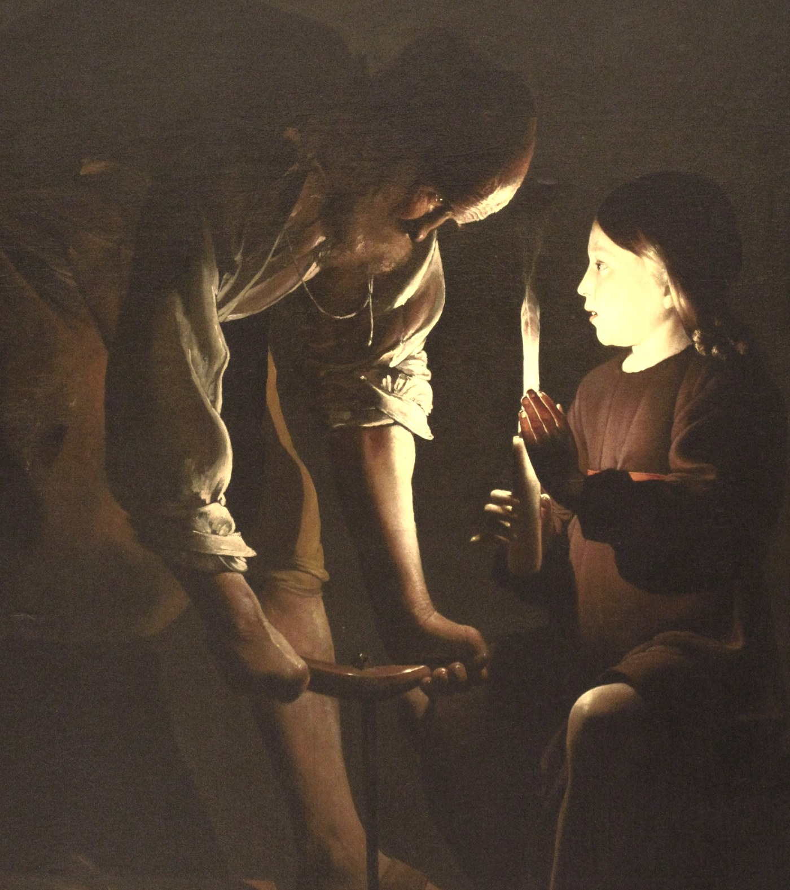

Plate I · Michelangelo, The Creation of Adam, c. 1512
Teaching machines the work of human hands.
Farasa records first-person video and machine data on construction sites and factory floors, and labels every frame, so robots can learn real work.
II
For most of history, a trade was learned by doing it beside someone who already could.

III
A robot can’t stand beside anyone. It learns from recordings. So we record the work from where the worker stands: what they see, what their hands do, and what the machines beside them are doing. Then we label every frame.
The internet taught machines to talk.Nothing has taught them to work.